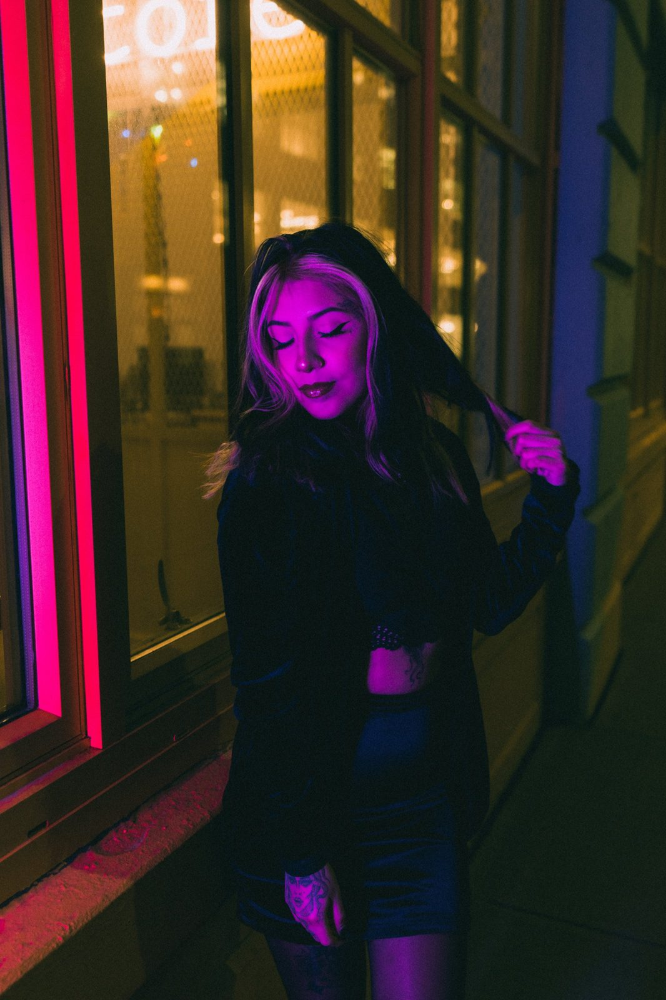
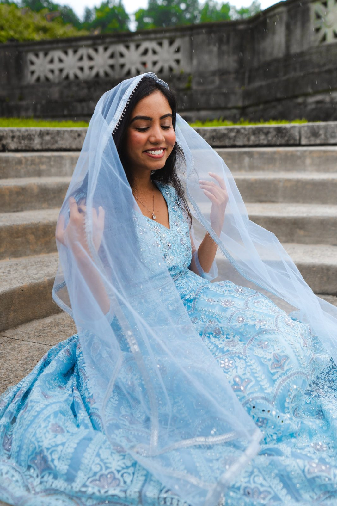
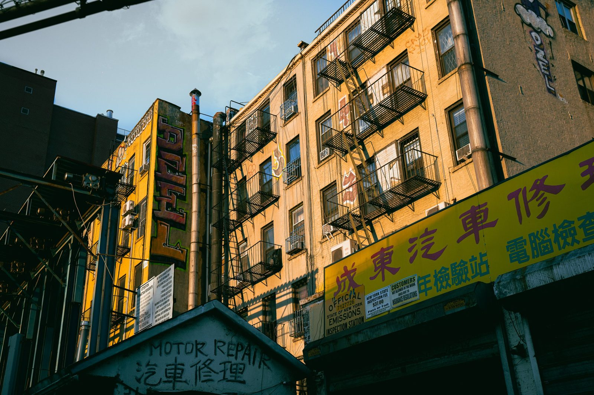
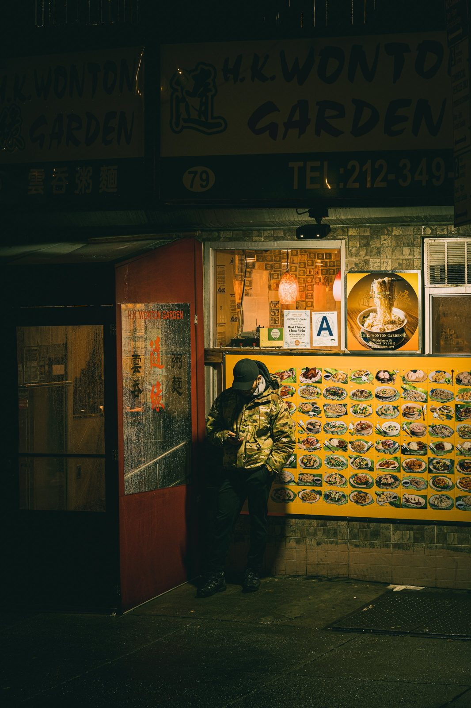

Portrait — 21


Street — 20


Concert — 10
Shop — Wallpapers
Phone and desktop wallpapers from the archive. Instant download.
About + Contact
Hi! I'm Johanan, also known as Jo Do. I'm a Brooklyn based photographer and videographer. I began my journey in photography, and more recently videography, in 2020.